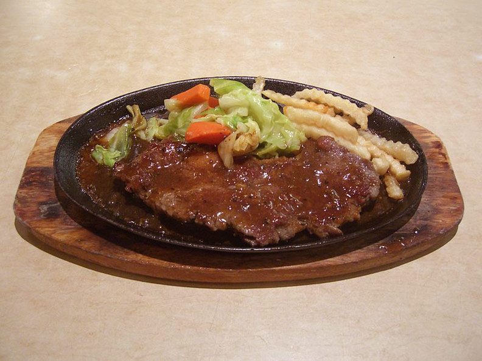

圖片 |
標題 |
說明 |
|  |
夜市牛排 |
夜市的鐵板牛排是許多人的最愛， 在高溫鐵板上，放上鐵板麵、牛排再打上一顆雞蛋， 淋上每一個店家自製的特殊醬汁，上桌時吱吱作響，光是用聽的就好餓啊！ 鐵板牛排獨特的鐵板焦香味， 也比不上高級牛排餐廳，確實讓人想一吃再吃的庶民美食， |
 |
雞排、鹹酥雞 |
炸得又香又酥的雞排和鹹酥雞，大口咬下滿滿雞汁， 配上蒜頭香、九層塔香，撒墊胡椒和辣粉，光是用想的就口水直流， 尤其台灣的雞肉品質實在不是普通的優質， 鮮嫩可口不柴不乾，怎麼炸都讓老外喜歡得不得了！ |
冰品 |
逛夜市逛到累了熱了，就想走到冰攤來一碗沁涼的挫冰， 加入自己喜歡的配料和淋醬，又或者來一碗綿密的雪花冰， 降溫解熱透心涼，嗑完一碗又能走進夜市繼續戰鬥！
|